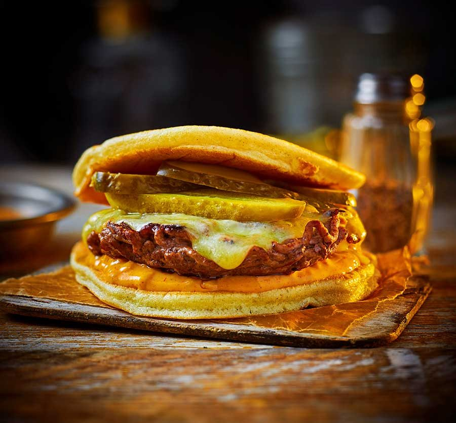

Smash burger pancakes

steps to make the recipe
- Beat the egg white to soft peaks using an electric whisk. Mix the egg yolk with the flour, baking powder and sugar in a bowl. Slowly whisk in the milk to form a smooth paste. Gently fold the whipped egg white into the yolk mixture.
- Heat half the oil in a non-stick pan over a medium heat. Spoon in a quarter of the mixture and cook for 2-3 mins on each side until the edge is set and golden. Repeat to make three more pancakes. Keep warm in a low oven.
- Turn the heat up to high. Divide the mince in two, gently mould into patties and season well with salt and pepper. Drizzle half of the remaining oil into the pan, then add one of the patties. Cover with a piece of baking parchment and use a second smaller pan to evenly press the patty down as hard as you can until about the same size as the pancakes – make sure you wear oven gloves to do this. You want it to be as thin as possible. Cook for 2-3 mins, then remove the pan and parchment, and flip the patty – the top should be deeply browned. Press down using a spatula and top with a slice of cheese. Cover the pan with the lid and cook for 1 min until the cheese is lightly melted and the patty is cooked through. Keep warm in the oven while you repeat the steps to cook the remaining patty.
- To assemble, spread two pancakes with the burger sauce, top each with a patty, some gherkins and finally the remaining pancakes.
List of the ingredients
- 1 egg , separated
- 75g plain flour
- 1 tsp baking powder
- 1 tbsp caster sugar
- 100ml milk
- 1 tbsp neutral-tasting oil
- 250g 15%-fat beef mince
- 2 slices American cheese or mild cheddar
- 30ml burger sauce
- 40g sliced gherkins